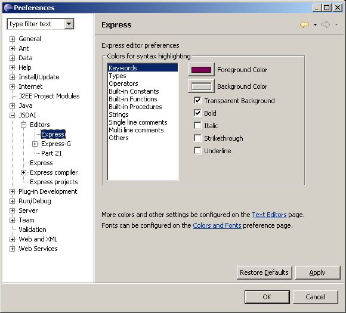

Express Editor Preferences
Open Editor for Express files (with extension .
exp
):
Window -> Preferences -> JSDAI -> Editors -> Express
.
You can choose syntax highlighting colors and font attributes here (see
Figure 1
).

Figure 1.
Preferences dialog window, Express panel
To top
Copyright © 2005-2008
LKSoftWare GmbH
. All Rights Reserved.
JSDAI is a registered trade mark of LKSoftWare GmbH.